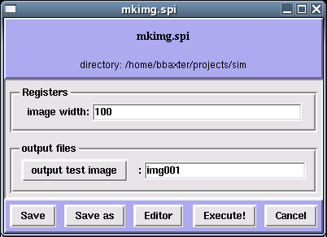

| Back: Table of Contents | Home: Table of Contents | Next: Another example |
This simple tutorial will introduce you to the Spire interface, show you how to run SPIDER batch files in Spire, and manage a reconstruction project.
Run spire at the Unix prompt. Put it in background with '&':spire &
| In Spire's main window, under the Project menu, select New. | |
 |
Project title: Specify a title for this project - for this tutorial you can enter "Simple project". Project file: This file is used by Spire to keep track of a project. PROJECT FILENAME MUST NOT HAVE AN EXTENSION. Data extension: Specify a file extension for data files - MUST BE 3 CHARACTERS! Directory for this project: Directory where you will run your SPIDER batch files. |
 |
Under the Dialogs menu, select Test dialog. |
 |
This brings up the Test dialog dialog window, which lists 3 SPIDER batch files, mkimg.spi, profile.spi, and stats.spi. Each batch file may be run by clicking its button. Each batch file also has an edit button, which lets you see its input and output files. Click the Edit button next to mkimg.spi |
|  | A batch file's Edit button opens up the Batch file edit form, which displays the batch file's inputs and outputs. mkimg.spi is a very simple batch file (click the Editor button to see the actual text of this batch file); it has a single input register and a single output file. You can adjust the image size or change the output filename in this form. If you made any changes, click Save, then click Execute! to run the batch file. |
 Spire will report if SPIDER completes successfully, or if there is an error, the last few lines of the results file will be displayed.
Spire will report if SPIDER completes successfully, or if there is an error, the last few lines of the results file will be displayed.
 |
 |